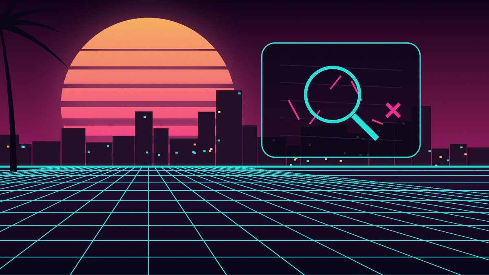

Niko Bellic vuelve en GTA 6: dos escenas del último capítulo y su actor original detrás
Aviso: esto cuenta algo del final de la historia. El protagonista de GTA 4 reaparece en el tramo final, con canas y como peso pesado de la familia criminal balcánica. En los créditos no sale con su nombre.
Por Redacción Golpe Diario · Publicado el

Qué ha pasado
Antes de nada, un aviso en serio: de aquí para abajo se destripa una sorpresa del último capítulo. Si vas por la mitad de la historia, deja de leer.
El personaje es Niko Bellic, el protagonista de GTA 4. Quien lo contó primero fue Zack Zwiezen, de Kotaku, que llegó ahí jugando y lo publicó el 19 de noviembre; al día siguiente lo recogieron Everyeye.it y Multiplayer.it. Ninguno de los tres habla de un secreto escondido que haya que buscar, sino de una escena de la propia historia.
El contexto, tal como lo cuentan Kotaku y Everyeye.it: Jason y Lucia acaban trabajando con Giorgio, un magnate naviero que presta sus barcos a cárteles y a criminales de Europa del Este para mover cocaína por el océano. La Guardia Costera ha incautado la carga de un envío reciente y Giorgio prepara un golpe para recuperarla antes de que sus socios suban a su ático a matarlo. Mientras se monta el atraco, aparece un pez gordo de la familia criminal balcánica para quitárselo de en medio. Ese es Niko, bastante mayor y con el pelo gris.
Son dos escenas de vídeo, según Kotaku y Everyeye.it: la primera para amenazar a Giorgio y la segunda para recoger la droga cuando el golpe sale bien. Justo antes, Giorgio suelta un «Daddy's back bitches» que Kotaku y Multiplayer.it leen como una referencia a la frase con la que arranca GTA 4. Multiplayer.it añade de dónde viene el personaje: a Niko lo dejamos en Liberty City, la versión que la saga hace de Nueva York, y aquí reaparece metido en la operación de cocaína de Leonida.
La parte que solo cuenta Kotaku es la de la voz. Vuelve Michael Hollick, el actor que dio voz a Niko, y en los créditos que ha publicado Rockstar no figura con el nombre del personaje, sino como «The Hitman». La compañía no ha hecho ningún anuncio sobre el cameo; Kotaku dice que Rob Nelson, su responsable de producción, dará más detalles de cómo salió la idea en una entrevista pendiente.
Qué significa para ti
- No es un secreto que haya que buscar. Si llegas al último capítulo, te lo encuentras jugando.
- No hay misión escondida ni decisión que tomar: ninguna de las tres fuentes menciona más requisito que avanzar en la historia.
- Son dos escenas de vídeo, no una misión con recompensa. No esperes dinero ni desbloqueos.
- Si no quieres que te lo destripen, estos días evita buscar el nombre de Niko en redes: es de lo más compartido desde el estreno.
- En los créditos no lo busques por el nombre del personaje. El actor, Michael Hollick, aparece como «The Hitman».
Contrastado con: Kotaku · Everyeye.it · Multiplayer.it
Sigue leyendo
El Joker de Florida amenazó con demandar a Rockstar, y ahora está en los créditos de GTA 6
Lawrence Sullivan, el internauta viral por su ficha policial de 2017, llegó a pedir 10 millones de dólares a Rockstar por un plano del tráiler. Hoy aparece acreditado como voz de la población de Leonida, y los mismos créditos nombran también a los empleados que la compañía despidió.
Tenebrae Lux: el videojuego dentro de GTA 6 que se ríe de los autores más pretenciosos
Jason tiene en casa una consola ficticia, la JoySystem, y en ella se puede jugar a Tenebrae Lux: un juego de puzles enterito, con sus propios créditos y su propio autor de mentira, pensado para reírse de los creadores de videojuegos que se toman muy en serio a sí mismos.
El santuario de Leonida que homenajea a familiares de la gente de Rockstar
Al norte de Hamlet hay un pequeño memorial que no da ninguna misión ni recompensa: Rockstar ha puesto ahí los nombres de familiares de su propio equipo que murieron mientras se hacía el juego.